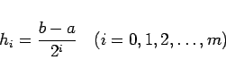
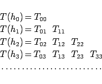
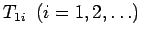

Inhalt Index DeskTop Bronstein

 Numerische Mathematik Numerische Integration Verfahren von Romberg
Numerische Mathematik Numerische Integration Verfahren von Romberg


Das Verfahren besteht aus den folgenden Schritten:
|  | (19.85) |
die Trapezsummen T(hi) bestimmt. Dabei beachte man die rekursive Beziehung
Die Anordnung der nach dieser Formel (19.87) berechneten Werte erfolgt am günstigsten in einem Dreieckschema, dessen Berechnung spaltenweise durchgeführt wird:
|  | (19.88) |
Das Schema wird nach unten mit fester Spaltenzahl so weit fortgesetzt, bis die Werte rechts unten im Schema hinreichend gut übereinstimmen. Die Werte  der zweiten Spalte entsprechen den nach der SIMPSON-Formel berechneten.